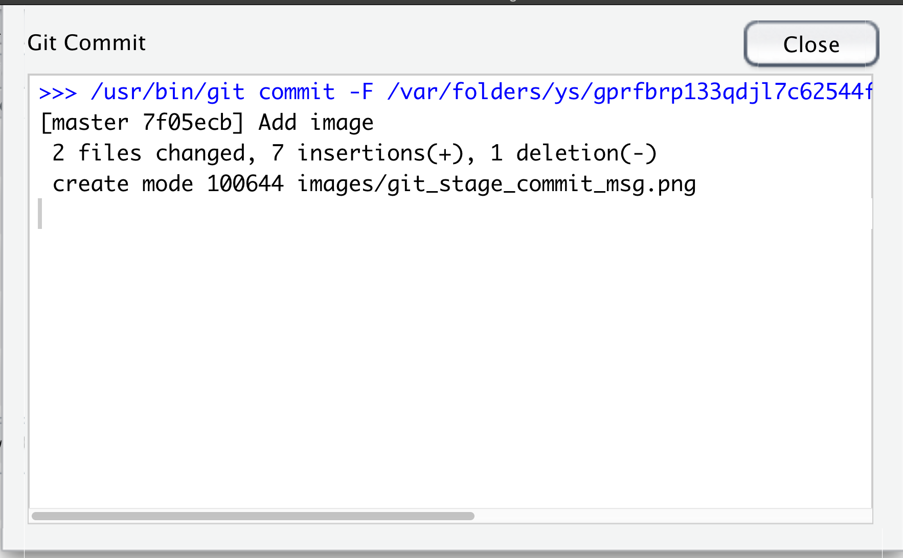
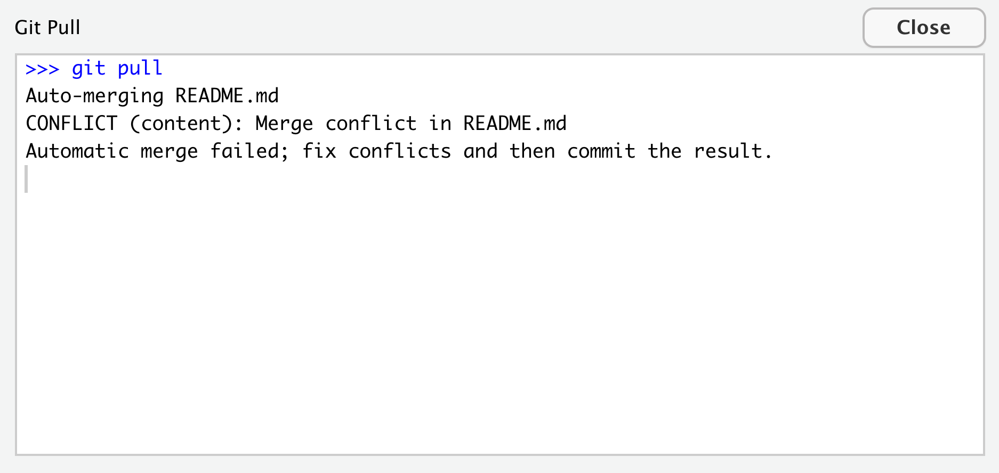
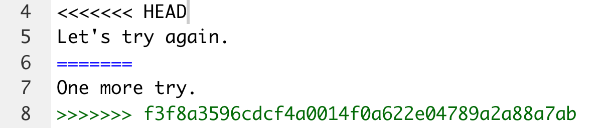

GitHub
Ik was al vaker van plan hier een stukje over te schrijven. Lisa Lendways tekst hierover vind ik heel duidelijk. Lisa, ik hoop dat je het goed vindt dat ik mij aan jou op trek zo. Dank je wel.

Lisa Lendway heeft veel van haar materiaal weghaald uit Happy git with R by Jenny Bryan. Dat is inderdaad een uitstekende bron, maar bevat ook veel informatie die we niet altijd nodig hebben. Als je Git en GitHub op meer geavanceerde manieren wilt gebruiken of als dit stuk onduidelijk is voor je, dan moet je het zeker bekijken. Het is trouwens überhaupt een goede bron.
Video uitleg
Git en GitHub
Git is een versie controle systeem. Het is net zoiets als Googledocs, maar het biedt ruimte aan veel soorten bestanden, ook bestanden waar Google docs niets mee kan … zoals .rmd bestanden! GitHub is een online interface om met Git te werken.
Waarom leren we deze dingen?!
GitHub is goed geïntegreerd met R Studio. Dus, we zullen geen command-line functies hoeven te gebruiken, tenminste niet nadat we alles hebben ingesteld.
Je bent verplicht om R te gebruiken voor je eindproject. De presentatie of paper moet worden opgeslagen als een .rmd document dat kan worden ‘geknit’ tot een html document. Door GitHub te gebruiken, kun je gemakkelijk met je groep samenwerken, ook als je niet bij elkaar bent.
GitHub leert je een aantal goede gewoontes aan. Je wordt gedwongen om na te denken over wanneer je ieets opslaat en om notities te maken over welke wijzigingen je hebt gemaakt, bijvoorbeeld.
Maak eerst een GitHub account aan
- Ga naar http://github.com
- Gebruik een username … zie Jenny Bryan’s tips. Incorporeer jouw eigen naam, maar gebruik een andere usernaam die je verder gebrukkt, neem iets waar jouw toekomstige baas zich prettig bij voelt. De username van de universiteit is misschien een goede optie.
Installeer Git
1. Controleer of je Git al geïnstalleerd hebt. Dit zal alleen het geval zijn als je het ergens anders gebruikt hebt. Om dit te doen, open je de commandoregel of, in R Studio, vouw je de Console uit. Er zou een tabblad moeten zijn dat Terminal zegt. In dat gebied type jewhich gitHet geeft iets terug als
/usr/bin/gitdan ben je klaar en hoef je Git niet meer te installeren. Op een Windows machine kun je misschien niet eens het which git commando succesvol intypen. Dit zou verholpen moeten zijn door git te installeren. Of je zult de shell moeten gebruiken.
- Als je Git niet geïnstalleerd hebt, moet je het installeren. De instructies zijn iets anders voor Windows en Macs.
Voor een Windows machine:
- Installeer Git for Windows. Als er gevraagd wordt naar “Aanpassen van uw PATH omgeving”, zorg er dan voor dat u “Git vanaf de commandoregel en ook van software van derden” selecteert. Anders denken we dat het goed is om de standaardinstellingen te accepteren.
- R Studio voor Windows geeft er de voorkeur aan dat Git geïnstalleerd wordt onder C:/Program Files en dit lijkt de standaard te zijn. Dit houdt bijvoorbeeld in dat de Git executable op mijn Windows systeem te vinden is in C:/Program Files/Git/bin/git.exe. Tenzij je specifieke redenen hebt om anders te doen, volg deze conventie.
Voor een Mac machine:
- Ga naar jouw shell/terminal en voer één van deze commando’s in om een aanbod te krijgen om
developer command line toolste installeren. Accepteer het aanbod … klik op installeren.
git --version
git config- Sommigen van jullie die op een Mac werken moeten misschien eerst het volgende doen in de terminal als je een project zonder succes probeert te openen.
xcode-select --installJe komt er zo achter of dit het geval is.
Ga nu terug naar de Console in R Studio en installeer het
usethispakket in R Studio. Sluit vervolgens R Studio en open het opnieuw.Laad de
usethisbibliotheek door het volgende stukje code in de console uit te voeren:
library(usethis)- Voer de volgende code uit in de console met enkele kleine wijzigingen. De
user.nameis je Git gebruikersnaam. Dit kan anders zijn dan je GitHub gebruikersnaam, hoewel het misschien een goed idee is om het gewoon hetzelfde te houden. Deuser.emailMOET hetzelfde zijn als je GitHub gebruikers email.
use_git_config(user.name = "Jane Doe", user.email = "jane@example.org")Maak een eerste repo (repository) en gebruik RStudio daarbij
Het woord “repo” is een afkorting van “repository”, en dat is precies wat het is: een plaats waar dingen (onze bestanden, in dit geval) worden opgeslagen. Het is als de map die je gemaakt hebt om al je werk voor deze les in op te slaan.
Laten we naar GitHub gaan en inloggen. Nadat je ingelogd bent, zou je een klein icoontje in de rechter bovenhoek moeten zien. Het mijne is een afbeelding van mij. Als ik daar op klik verschijnt er een drop-down en kan ik “Your repositories” kiezen. Doe dat. Je zou nu zoiets als dit moeten zien:

Klik op de “New” knop. Geef jouw repository een naam, bv NAME_test_repo, waar NAME eigenlijk jouw naam is. Kies Public en klik de README file aan. Klik dan op Create repository.

Er zijn dingen die je direct binnen GitHub kunt doen, maar we zullen ons richten op de integratie met R Studio.
Klonen van een repo
Denk aan het klonen van een repo als het “kopiëren” van de repository naar je computer. Maar als met het kopiëren doet, houdt het de verbinding met de online repo.
Laten we dit doen. Op je mijn_test_repo pagina, kies je de groene knop met Code en kopieer je het pad door het icoontje met een pijl erop te selecteren en erop te klikken.
Ga nu naar R Studio. Klik op Bestand –> Nieuw Project … Je zou nu een venster moeten zien dat er als volgt uitziet:
Kies Version Control. Dan zie je een scherm dat er zo’n beetje zo uitziet:
Kies Git. Dan zou je een scherm moeten zien dat er uitziet als dit, zonder alle details ingevuld. De Repository URL is waar je de repo URL moet plakken die je gekloond hebt van github. Het zal ook de Project mapnaam invullen. Laat die gewoon staan. Let op waar de project directory zich bevindt en verander het naar een betere directory indien nodig. Klik op Create Project.
Als je in de Bestanden tab kijkt in het rechter ondervenster van R Studio, dan zou je het .gitignore bestand moeten zien, het project bestand (eindigt op .Rproj), en het README.md bestand. Je zou ook een Git tab moeten zien in het rechter bovenvenster van R Studio. Als je nu op de Git tab klikt, zul je daar niets zien.
Met de Git tab open, laten we het README.md bestand in R Studio openen. Maak een kleine wijziging in het bestand door de zin “Ik verander iets in dit bestand.” toe te voegen. Klik dan op het save icoon. Als je dit doet, zul je README.md zien verschijnen in de Git tab.
Klik nu op de Commit knop in de Git tab. Zet een vinkje in het vakje naast het README.md bestand onder het woord Staged (in de toekomst kun je meerdere bestanden tegelijk stagen door de vakjes naast meerdere bestanden aan te vinken) en voeg een commentaar toe aan het commit vakje.
Het zou er ongeveer zo uit moeten zien:

Klik tenslotte op commit. Je krijgt dan een bericht dat het voltooid is. Het bericht kan cryptisch overkomen als je er niet aan gewend bent. Het ziet er ongeveer zo uit:

De wijziging die je hebt gemaakt is nu gecommit in het lokale geheugen. Het gewijzigde bestand is alleen gewijzigd op je computer, NIET online als je op GitHub kijkt … ga maar eens kijken. Klik op de Diff knop in de Git tab en je kunt de geschiedenis van je commits zien.
Vervolgens gaan we die wijzigingen naar GitHub pushen door op de groene pijl omhoog in de Git tab te klikken. Dit zal je een bericht geven dat er ongeveer zo uitziet:

Werd je gevraagd om een gebruikersnaam en wachtwoord? Probeer een andere wijziging te maken, vast te leggen en te pushen. Wordt er nog steeds om een gebruikersnaam en wachtwoord gevraagd? Zo ja, dan kun je hier zien hoe je dat doet Jenny Bryans bron.
PROBEER HET EENS!!
Voeg een .rmd bestand toe aan je project. Doe dit door te gaan naar Bestand –> Nieuw bestand –> R Markdown … Voeg wat woorden en een R code chunk toe aan het .rmd bestand. Sla het op, commit het (vergeet het bericht niet!), en push het. Controleer GitHub online om er zeker van te zijn dat je het .rmd bestand daar ziet.
Nu,
knitje het bestand lokaal. Commit de wijzigingen (zorg ervoor dat je een vinkje zet naast alles wat je ge-staged wilt hebben - .rmd, .html, etc.) en push ze naar GitHub. Controleer GitHub online om er zeker van te zijn dat je alles ziet wat je verwacht.
Partners toevoegen
Tot nu toe hebben we eigenlijk alleen technieken geleerd om GitHub te gebruiken om onze eigen bestanden te beheren, maar het coolste eraan zijn de samenwerkingsmogelijkheden. De manier waarop we dit gaan leren is door medewerkers aan de repo toe te voegen.
Zoek iemand om mee samen te werken. Als er een oneven aantal is, maak dan een groepje van drie. In je groepje, voeg elkaar toe als medewerkers aan je project. In GitHub, op de repo pagina, ga naar Instellingen. Een van de opties aan de linkerkant is Collaborators. Klik daarop en doe wat er staat.
De persoon die is uitgenodigd om samen te werken zal een email ontvangen en zou ook in staat moeten zijn om de uitnodiging op GitHub te zien. Ze moeten deze accepteren. Eenmaal geaccepteerd, zouden jullie beiden (of alle drie) toegang moeten hebben om wijzigingen in het bestand vast te leggen.
Commit –> Push –> Pull –> … (en Communicatie)
Zodra je medewerkers hebt toegevoegd, kunnen alle medewerkers committen en pushen. Maar, wat gebeurt er als iemand iets commit en terugzet en jij gaat er dan aan werken op je computer… hoe krijg je dan die wijzigingen? … PULL!
Probeer in jullie groepen het volgende. Jullie moeten allemaal meewerken aan elkaars projecten, dus je kunt van rol wisselen nadat je het één keer gedaan hebt.
De medewerker moet eerst de repo klonen waaraan hij gevraagd is om mee te werken. Als ze een ander project open hebben, sla dan op, commit, en push alle wijzigingen. Sluit dan dat project en open het project waar ze om gevraagd is om aan mee te werken door de GitHub repo te klonen. De medewerker moet het project open hebben in R Studio.
De medewerker moet proberen te trekken (
pullen) door op de aqua pijl omlaag te klikken in de Git tab. Je zou een bericht moeten krijgen dat er als volgt uitziet:

De persoon die de repo heeft aangemaakt, maakt een wijziging in zijn .rmd bestand. Het kan een kleine wijziging zijn, zoals het toevoegen van een zin. Diezelfde persoon slaat het bestand op, commit (staged en schrijft een commit boodschap), en pushed het naar GitHub. Controleer online om er zeker van te zijn dat de meest recente wijzigingen zijn gepushed.
De medewerker haalt nu die wijzigingen naar zijn lokale map (naar zijn computer). Klik op het pull icoon. Je zou een bericht moeten zien dat er ongeveer zo uitziet:

En controleer het bestand waarin een wijziging is aangebracht om er zeker van te zijn dat de wijziging wordt weerspiegeld in het bestand op uw computer.
- Ga nog een paar keer heen en weer en breng kleine wijzigingen aan. Degene die eigenaar is van de repo zou de wijziging moeten maken en de medewerker zou het moeten binnenhalen. Wissel dan van rol. Als je wisselt, wees er dan zeker van dat je aan het juiste project werkt.
Conflicten samenvoegen
Als je samen aan een project werkt, is de kans groot dat je tegen een moment aanloopt waarop twee van jullie hetzelfde bestand tegelijkertijd aan het bewerken zijn. Soms, als je allebei je wijzigingen probeert te pushen, zul je wat genoemd wordt een “merge conflict” krijgen. GitHub zal niet weten welke te gebruiken. Dus, zal het je dwingen om te beslissen.
Als je probeert je wijzigingen naar GitHub te pushen en iemand anders heeft zijn wijzigingen met betrekking tot hetzelfde bestand al gepushed, dan zul je een bericht als dit krijgen:
Dan, wanneer je de wijzigingen binnenhaalt, krijg je een bericht zoals dit:

Merk op dat het je vertelt in welk bestand het samenvoegconflict zich voordeed. Je moet dat bestand openen en beslissen hoe de conflicterende informatie samengevoegd moet worden. In het begin zal het er ongeveer zo uitzien:

Het deel na het woord HEAD is wat in je lokale bestand staat. Alles na de ====== is wat in het bestand op afstand staat (d.w.z. de wijzigingen die je medewerker heeft gemaakt). Je kunt besluiten om dit op te lossen op elke manier die je wilt: combineer de twee ideeën, verwijder ze allebei, houd er maar een over, etc. Als je klaar bent, zorg er dan voor dat je de <<<<<<< HEAD en >>>>>>> verwijdert, gevolgd door de alfanumerieke string, plus alle andere vreemde tekens.
Sla het bestand dan op en doe de gebruikelijke commit en push. Je zou de wijzigingen naar GitHub gepushed moeten zien worden.
Laten we dit eens proberen!
- In groepjes van 3-4, oefen je GitHub vaardigheden.
- Kies iemand om een nieuwe repo aan te maken op GitHub genaamd
our_collaborative_graph.
- De maker voegt de anderen toe als collaborators.
- De medewerkers moeten hun e-mail controleren en accepteren dat ze medewerkers zijn.
- De maker en de medewerkers klonen de repo lokaal.
- Een medewerker voegt lokaal een .rmd bestand aan het project toe. De titel moet zijn “Onze grafiek” en voeg alle groepsleden toe als auteurs. Voeg een R code stuk toe dat de
tidyversebibliotheek laadt. Sla het bestand op, commit met bericht, en push naar GitHub. Controleer online om er zeker van te zijn dat het goed gepushed is.
- Alle andere groepsleden halen de wijzigingen lokaal op.
- Een andere medewerker voegt een ander R code stuk toe. Maak met de mpg dataset een scatterplot met hwy op de y-as, displ op de x-as en kleur de punten met drv. Sla de wijzigingen op. Brei het bestand. commit dan met bericht en push naar GitHub. Zorg ervoor dat je alle bestanden in de commit staged. Controleer online om er zeker van te zijn dat je de wijzigingen ziet.
- Alle andere groepsleden halen de wijzigingen lokaal op.
- Een ander groepslid (medewerker of maker als je maar 3 groepsleden hebt) wijzigt de R code chunk die de grafiek maakt, door mooie x en y labels toe te voegen en te veranderen naar
theme_minimal(). Sla de wijzigingen op. Brei het bestand. commit dan met bericht en push naar GitHub. Zorg ervoor dat je alle bestanden in de commit staged. Controleer online om er zeker van te zijn dat je de veranderingen ziet.
- Alle grop leden trekken. Degene die net gepushed heeft zou moeten zien dat ze al up to date zijn. Alle anderen zouden de wijzigingen lokaal terug moeten zien.
- Nu moeten alle groepsleden iets toevoegen aan het .rmd bestand. Vertel elkaar niet wat je toevoegt. Als je klaar bent, sla op, brei, commit, en push naar GitHub. Ten minste één van jullie zal een samenvoeg conflict krijgen, dus zal het je vragen om wijzigingen van GitHub binnen te halen en het conflict op te lossen. Doe dat. Deze keer zul je het .rmd bestand moeten aanpassen in plaats van de README zoals ik eerder liet zien.
- Als je klaar bent, moeten 112 leerlingen een project opzetten met hun eigenlijke groepsprojectleden. Neem een .rmd-bestand op met de naam “ideas.rmd” waarin je ideeën kunt uitwisselen, inclusief onderwerpen en gegevens die je misschien zou willen analyseren. 155 leerlingen moeten de enquête over het groepsproject op de Moodle-pagina invullen.
Bron
Happy git with R door Jenny Bryan. Leer meer over Distill via https://rstudio.github.io/distill.